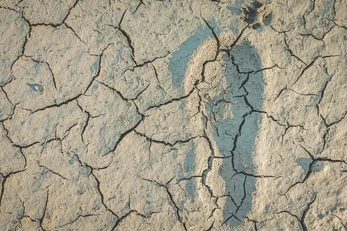
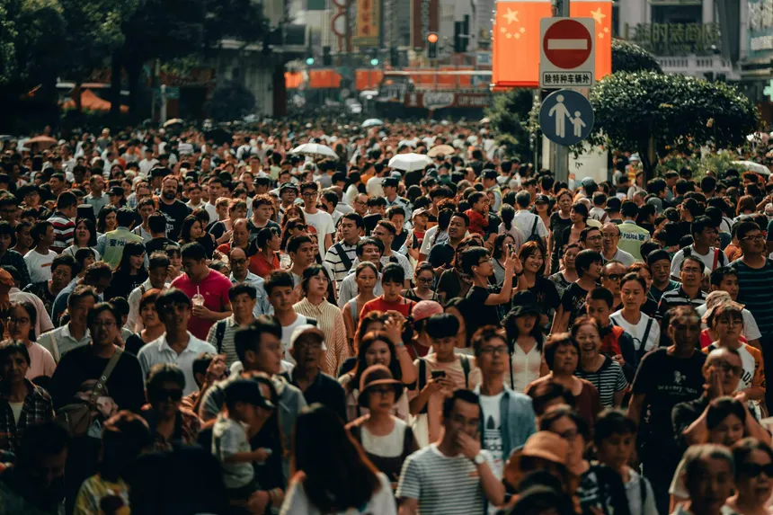
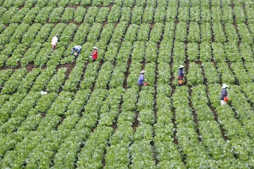
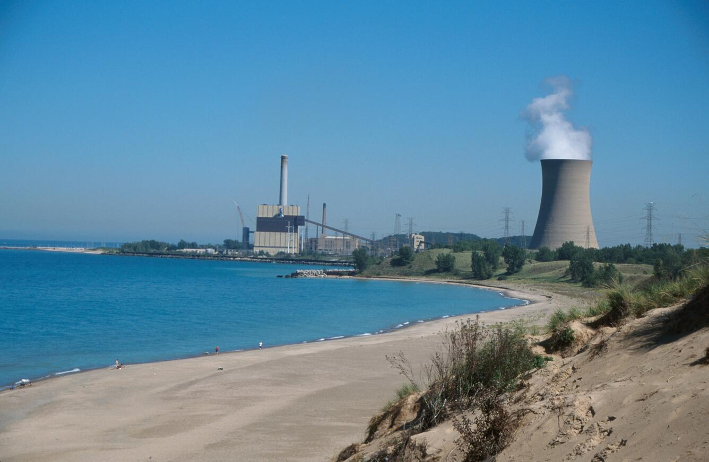

Why Water Conservation Matters
Water is an essential part of every living being, and it is not only beneficial for us but also for other species, as well as for future generations to come. I chose this topic because a lot of us waste a ton of water more than we realize, and more awareness should be brought to the problem

© pixno
Why do we need to conserve water?
- Population growth
- Agriculture
- Climate change
- Energy consumption
Population Growth
As our global population continues skyrocketing, factors such as drinking, cooking, sanitation or hygein, all contribute for increased consumption of fresh water. In many regions, the rate of population growth exceeds the development of water supply and sanitation systems, leading to economic water scarcity where people lack access despite available water resources. Sufficient freshwater remains incredibly essential for growth of humans.

© unsplash

© pexels
Agriculture
As mentioned above, more people means a greater need for food. Since agriculture consumes about 70% of global freshwater for irrigation, livestock, and food processing, population growth significantly drives up water demand Furthermore, if there were to be a drought, plants will die, and it becomes difficult to grow food. Therefore, keeping a habit of conserving water is essential for having enough water for growing food, keep plants from dying, and sustain ourselves during droughts.
Climate change
Climate change affects water availability all around the world. Rising global temperatures increase droughts in some regions, while other regions experience massive floods. Frequent storms increase runoff that gets carried into water bodies. These changes directly make accessing freshwater much harder for communities.
Climate change is primarily a water crisis. We feel its impacts through worsening floods, rising sea levels, shrinking ice fields, wildfires and droughts. However, water can fight climate change. Sustainable water management is central to building the resilience of societies and ecosystems and to reducing carbon emissions. Everyone has a role to play – actions at the individual and household levels are vital.- © UN WATER
Energy consumption
Conserving water is not only beneficial for our health and well-being, but also for energy savings. According to the study by USGS - for many countries around the world, energy generating sources such as Thermoelectric Power (Coal, Natural Gas, Nuclear) as well as Hydroelectric Power, etc, all rely heavily on water. Water here acts as a coolant and a working fluid, which means water is non-negotiatable for the majority of our energy infrastructure. Hence why we should conserve our water usage, as water scarcity directly limits energy production. Additionally, conserving saves energy, for our household utilities as well as for industrial energy consumption.

© NIPSCO Coal Power Plant Cooling TowerFailing to conserve water can worsen water scarcity and increase the risk of droughts, environmental damage, and economic instability.
Consequences of water scarcity
- Plummeting biodiversity
- Food and Agricultural Crisis
- Worsened Water Quality and Health Risks
- Economic and Social Instability
Plummeting biodiversity
Freshwater aquatic animals experience massive declines, by about 85% since the 1970s according to WWF’s Living Planet Report 2024, largely due to water scarcity as well as huge water withdrawals.Other main drivers include habitat destruction, fragmentation, overuse of freshwater and pollution from massive dams. These cumulative impacts weaken the ecosystem and forces many freshwater species towards collapse.
Food and Agricultural Crisis
Without active action to conserve water, vital plant species struggle to grow and mature. Global food production is predicted to deteriorate by 50% by the year 2050 according to some studies. Especially major-grain export areas face the highest risk of agricultural decline. This creates a chain reaction. Livestock mortality rates rise and farmers are forced prematurely sell off herds. Due to lack of essential livestock food sources specifically corn and soy and more feed crop failures. From then we would experience immediate escalation of food instability and shortages in global communities. Widespread crop and livestock losses trigger massive market price hikes and severe food inflation. Farmers witness extreme financial instability and loss of livelihood. The cumulative effect would then scale into a major threat to global food and economic security.
Worsened Water Quality and Health Risks
Dropping water levels fail to neutralize incoming industrial, agricultural and sewage waste, leading to quality downgrades and dilution failures. Moreover, the highly toxic chemicals such as heavy metals and pesticides from these wastes get contaminated into drinking water. Which obviously then leads to health problems that could well be very expensive or impossible to treat. Furthermore, due to low water flow and higher temperatures, water becomes a breeding ground for many parasites or pathogens to thrive. This would then make sanitation and hygiene impossible due to the many diseases and infections carried across water bodies. To combat this, many industries would resolve to water treatment infrastructures, of which could become overwhelmed and end up distributing unsafe drinking water or worst case scenario, complete system failures.
Economic and Social Instability
All of these impacts could then add up to massive losses for governments as well as for the people of society. Assuming no actions taken, the World Bank report states - decline in GDP by up to 6% by the year 2050 in some regions due to factors such as climate change. Migration would then become apparent and countries could face immigration issues with millions becoming climate refugees. In some communities many women and children lose their chance for education as well as economics due to water collection duty and this creates social inequalities between people.
Adopting sustainable water management practices remain essential in combating the risks of water scarcity.
Such key practices include
- Agricultural Transformation
- Infrastructure Modernization & Recycling
- Policy & Economic Incentives
Agricultural Transformation
Water is essential for agriculture, where efficiency means minimizing losses through evaporation or runoff. Strategies to optimize existing systems include using soil moisture sensors, chiseling compacted soils, and increasing organic matter via mulching. While drip irrigation is the most effective method for reducing waste, improving current management practices can still yield significant water savings.
Infrastructure Modernization & Recycling
Upgrading municipal and industrial infrastructure to fix leaks, which currently waste 30% of the supply, is critical for water conservation. Implementing wastewater recycling systems for industrial cooling, landscaping, and indirect potable use creates a circular water economy, which drastically reduces the need to extract fresh water from stressed aquifers and rivers.
Policy & Economic Incentives
Governments must enforce tiered water pricing models where costs rise with usage, creating a financial imperative for large-scale users to conserve. Additionally, implementing strict zoning laws to protect wetlands and mandating water-efficient standards for new commercial and industrial construction ensure a long-term systemic reduction in water demand.
We have discussed existing strategies and solutions, but now we will focus on individual actions that can help contribute to global water conservation.
Upgrade Home Irrigation:
Replace spray sprinklers with drip irrigation or soaking hoses for gardens to minimize evaporation and deliver water directly to plant roots.
Fix Leaks Promptly:
Regularly check faucets, toilets, and pipes for leaks, as even small drips can waste significant amounts of water over time, mirroring the 30% loss seen in municipal systems.
Adopt Water-Smart Landscaping:
Use mulching and plant drought-resistant varieties to improve soil water retention and reduce the need for frequent watering.
Install Sensors and Timers:
Utilize smart irrigation controllers or soil moisture sensors to water only when necessary, avoiding runoff and over-watering.
Support Local Conservation:
Advocate for or participate in local rainwater harvesting programs and support policies that protect local wetlands and water sources.